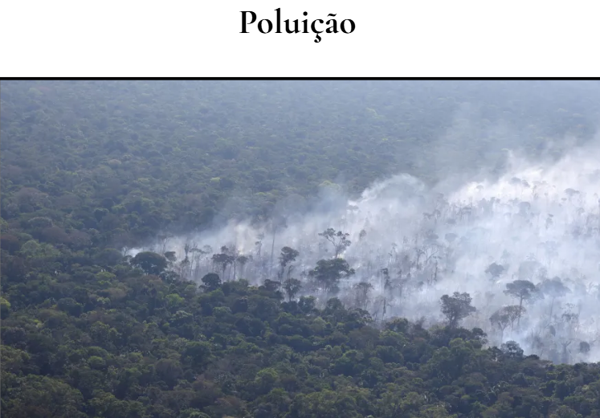
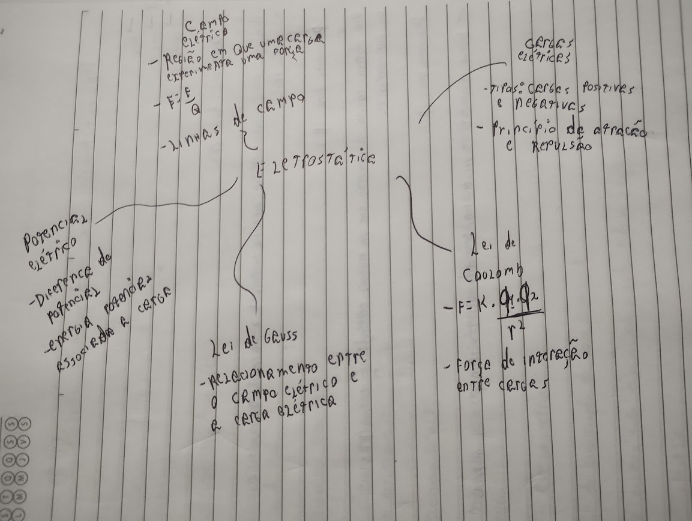
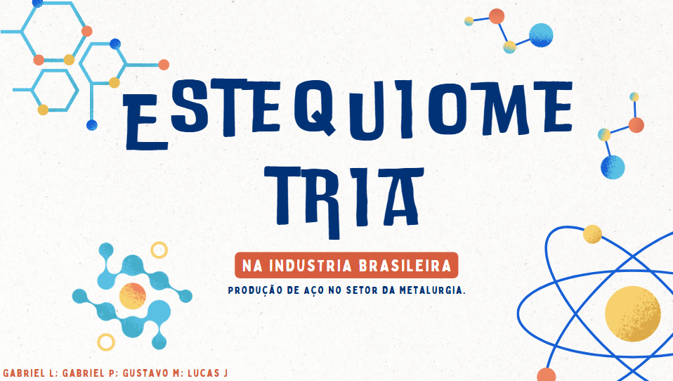
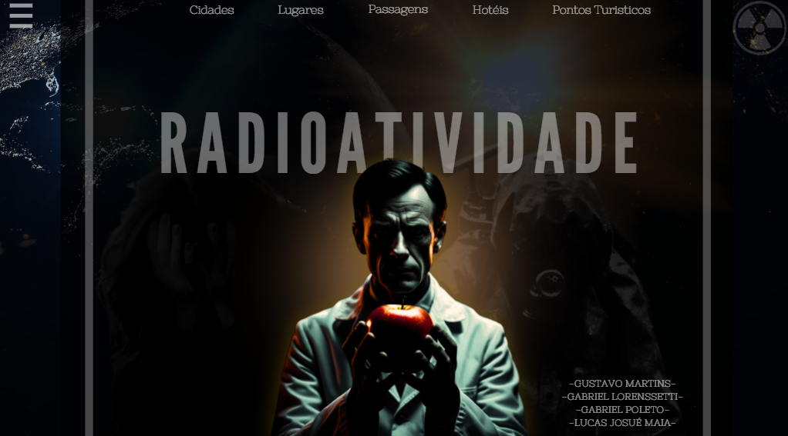
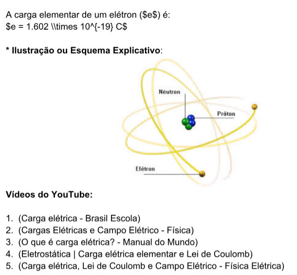
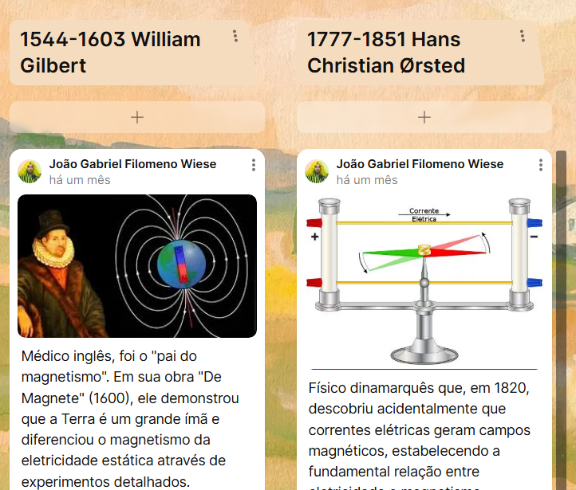
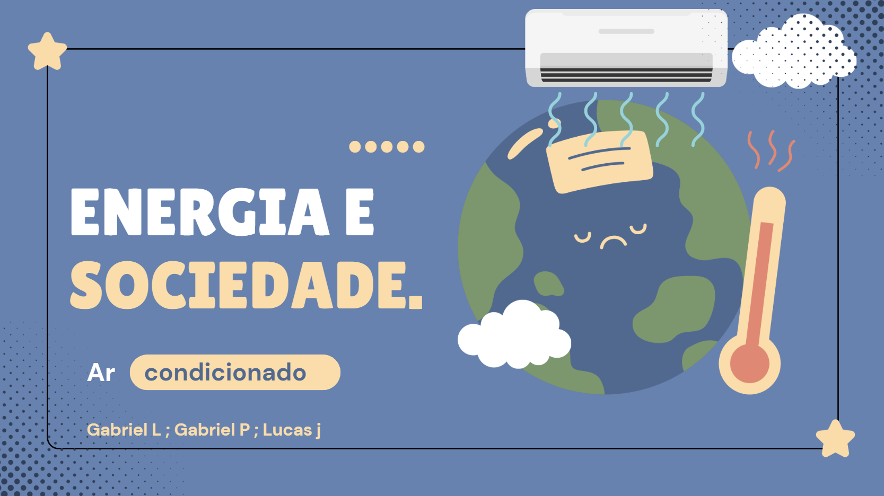
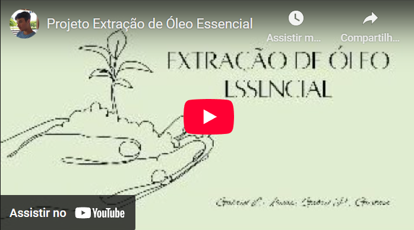
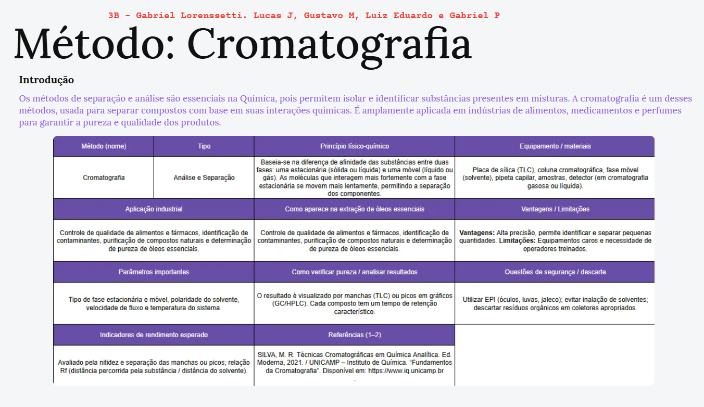

Matéria
Nesta aula, iniciamos com a recepção e boas-vindas, seguida de uma breve revisão e introdução ao tema central: Poluição. Em seguida, analisamos questões do PASSE e discutimos imagens relacionadas ao tema, promovendo uma reflexão crítica. Por fim, formamos grupos de trabalho, realizamos a escolha de um tipo específico de poluição e iniciamos uma pesquisa aprofundada sobre o tema selecionado. (C1, H1, H2 & H4) Link
Nesta aula, revisamos os conceitos de eletrostática, como carga elétrica, eletrização, força elétrica, campo e potencial elétrico. Compreendemos o funcionamento da corrente elétrica e aplicamos leis como a Lei de Coulomb para resolver problemas. Criamos um mapa mental para organizar os tópicos. (H29, H30 & H31)
Nesta aula, tivemos como objetivo aplicar os conceitos fundamentais das Ciências da Natureza para explicar fenômenos do cotidiano e desenvolver práticas de investigação científica. Inicialmente, participamos de uma exposição teórica sobre estequiometria e cálculos estequiométricos. Em seguida, formamos grupos para realizar uma pesquisa orientada, cuja apresentação será realizada na próxima semana. (C2, H7, H9 & H10) Link
Nesta aula, tivemos como objetivo compreender as ciências naturais e as tecnologias como construções humanas ligadas à cultura e às visões de mundo dos povos. No primeiro momento, participamos de uma exposição teórica sobre radioatividade e Tempo de Meia Vida. Em seguida, nos organizamos em grupos para realizar uma pesquisa orientada sobre temas relacionados à radioatividade. (C1, H1, H3 & H4) Link
Nesta aula, tivemos como objetivo compreender a relação entre Física e Química de forma integrada. Para isso, trabalhamos na elaboração de um glossário técnico ilustrado e matemático, reunindo os principais conceitos de eletroquímica e eletricidade. Durante a atividade, destacamos definições importantes, exploramos aplicações no cotidiano, organizamos fórmulas matemáticas relevantes e pensamos em ilustrações explicativas que ajudassem a tornar o conteúdo mais claro e acessível. Dessa maneira, conseguimos aprender de forma ativa e interdisciplinar, conectando teoria e prática. (C2, H6, H7 & H9) Link
Nesta aula, estudamos o sistema imunológico por meio de flashcards e organizamos o conteúdo em um mapa mental individual, abordando: Diferenças entre imunização ativa e passiva, Funções das principais células e moléculas da defesa, O papel das vacinas, memória imunológica e variabilidade viral. Assim, relacionamos teoria e prática de forma clara e organizada. (C4, H23) Link

Nesta aula, em duplas, estudamos o magnetismo por meio da criação de uma linha do tempo com cientistas que contribuíram para esse conceito e da elaboração de um cartaz sobre o magnetismo solar, terrestre e as auroras polares. (C6, H36) Link
Nesta atividade, realizamos uma atividade sobre o uso da energia em nosso cotidiano. O objetivo foi escolher um aparelho ou equipamento que depende da energia para funcionar e elaborar uma apresentação em três slides, mostrando sua importância ao longo do tempo. Por meio dessa atividade, pude compreender como a vida era antes da invenção do objeto escolhido, os impactos positivos e negativos de seu uso atualmente e refletir sobre possíveis melhorias e inovações sustentáveis para o futuro. (C1, C2, H1, H2, H5 & H9) Link
Nesta atividade, desenvolvemos um vídeo explicativo sobre o processo de destilação por arraste a vapor utilizando plantas aromáticas, como alecrim, lavanda e manjericão. A atividade teve como objetivo compreender melhor como ocorre a extração dos óleos essenciais e suas diversas aplicações. Durante a produção, pesquisei sobre as características e o cultivo das plantas, além de entender o funcionamento do método de destilação. Essa experiência foi importante para relacionar os conceitos teóricos com a prática, tornando o aprendizado mais visual, dinâmico e envolvente. (C5, H24, H25, H26, H27 & H28) Link
Realizamos uma atividade sobre o uso da energia em nosso cotidiano. O objetivo foi escolher um aparelho ou equipamento que depende da energia para funcionar e elaborar uma apresentação em três slides, mostrando sua importância ao longo do tempo. Por meio dessa atividade, pude compreender como a vida era antes da invenção do objeto escolhido, os impactos positivos e negativos de seu uso atualmente e refletir sobre possíveis melhorias e inovações sustentáveis para o futuro. (C1, C2, H1, H2, H5 & H9) Link
